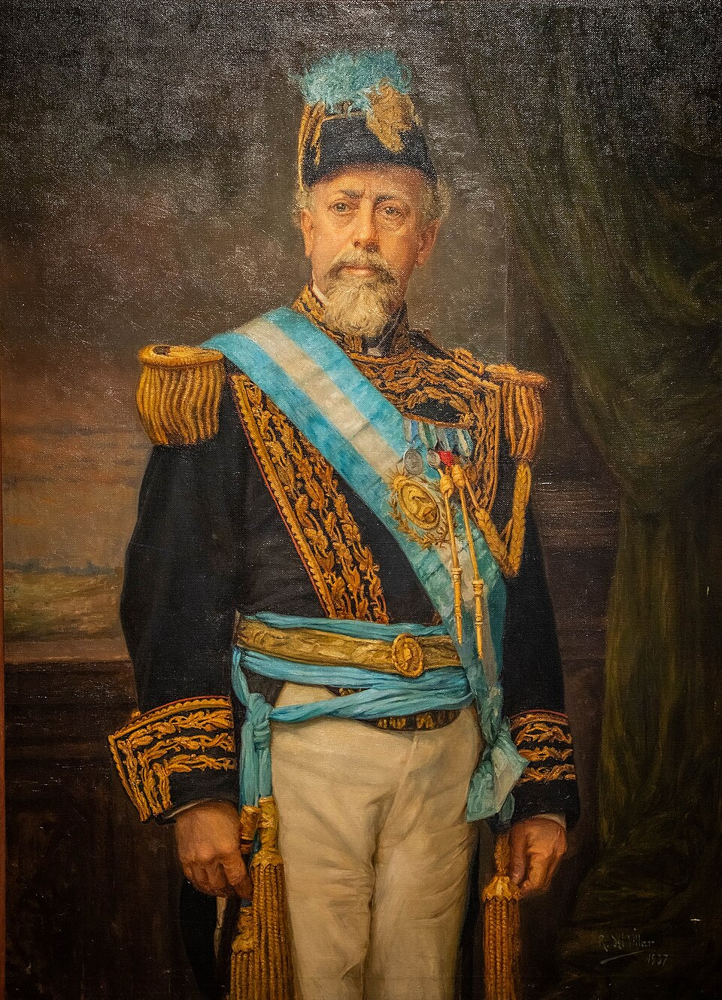

La escuela será obligatoria y gratuita para todos los niños de la República
El Congreso sancionó y el presidente Roca promulgó la ley de educación común: instrucción primaria obligatoria, gratuita y gradual para los niños de seis a catorce años. La enseñanza religiosa queda fuera del horario escolar, a cargo de los ministros de cada culto. Termina así una disputa que encendió al Congreso y a la prensa durante meses.

Lleva desde hoy el número 1420 la ley que puede llegar más lejos que ninguna otra de cuantas ha votado el Congreso argentino. El presidente Roca promulgó la ley de educación común, que declara la instrucción primaria obligatoria para todos los niños de seis a catorce años, gratuita en las escuelas públicas y gradual en su enseñanza. Ningún padre podrá ya alegar pobreza ni distancia: el Estado se obliga a poner la escuela, y la ley obliga al vecindario a poblarla. En un país donde tantos hombres firman con el pulgar, la palabra obligatoria tiene el peso de una revolución silenciosa.
La ley organiza cuanto toca al aula: mínimos de enseñanza que van de la lectura y el cálculo a la geografía nacional y las nociones de higiene; maestras y maestros con título de las escuelas normales; inspección del Estado sobre escuelas públicas y particulares; edificios dignos, y el fomento de las bibliotecas populares. El artículo que incendió los debates es otro: la enseñanza religiosa solo podrá darse fuera del horario de clase, por los ministros de cada culto, a los niños cuyos padres la soliciten. La escuela común no tendrá catecismo obligatorio: tendrá bancos iguales para los hijos de todos los credos.
La disputa viene de lejos. Desde el Congreso Pedagógico de 1882 la cuestión religiosa dividió a los hombres públicos en dos bandos que llenaron meses de sesiones y columnas de diarios: de un lado, quienes sostienen que sin religión no hay moral que enseñar; del otro, quienes responden que en una república que recibe inmigrantes de todas las creencias, la escuela debe ser casa común y no capilla. Pesó en la balanza el ejemplo de las naciones que más han prosperado por la instrucción, y pesó, sobre todo, la prédica que el señor Sarmiento sostiene desde hace treinta años: educar al soberano.
Quien quiera ver a quién alcanza esta ley, camine por los conventillos de esta ciudad o por las colonias del litoral: niños que hablan italiano, gallego, francés, inglés, vasco, dialectos que ni nombre tienen aquí, hijos de labriegos que jamás conocieron escuela. Para ellos se ha legislado. La maestra normal, esa joven de guardapolvo que ya es figura familiar en nuestros pueblos, será el primer rostro de la patria que vean miles de criaturas. Cuentan los inspectores que en algunos distritos de campaña apenas uno de cada tres niños pisa un aula: ese es el enemigo a vencer.
No faltará quien mida esta jornada con la vara chica de la política: una votación ganada, un partido que se anota un triunfo. Este diario prefiere la vara larga. Las leyes de aduana se derogan, los empréstitos se pagan y se olvidan; un aula, en cambio, trabaja para un tiempo que ningún gobierno verá. El hijo del analfabeto sabrá leer, y el hijo del que hoy desembarca de un vapor de Génova o de Vigo deletreará en castellano el nombre de esta República. Pocas leyes se votan que lleguen tan lejos como un aula. Habrá que construir las escuelas: el papel ya está.